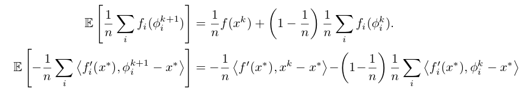
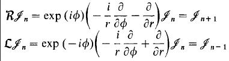
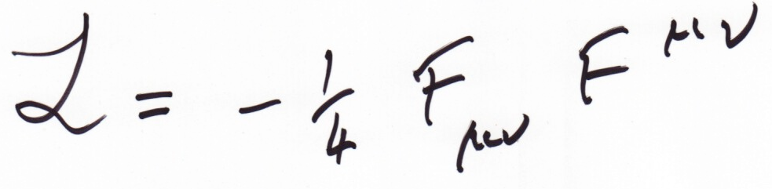

Some LaTeX tricks
Loïc Estève

\(\)
Trick #1: detexify
Trick #2: mathpix
Install and run on Ubuntu (OSX and Windows supported too):
sudo snap install mathpix-snipping-tool mathpix-snipping-toolIf you know how to install a snap on a IT-managed desktop machine talk to me! I stopped after 2+ hours going nowhere ...
Demo
LaTeX maths
 \[ \begin{aligned} \mathbb{E}\left[\frac{1}{n} \sum_{i} f_{i}\left(\phi_{i}^{k+1}\right)\right] &=\frac{1}{n} f\left(x^{k}\right)+\left(1-\frac{1}{n}\right) \frac{1}{n} \sum_{i} f_{i}\left(\phi_{i}^{k}\right) \\ \mathbb{E}\left[-\frac{1}{n} \sum_{i}\left\langle f_{i}^{\prime}\left(x^{*}\right), \phi_{i}^{k+1}-x^{*}\right\rangle\right] &=-\frac{1}{n}\left\langle f^{\prime}\left(x^{*}\right), x^{k}-x^{*}\right\rangle-\left(1-\frac{1}{n}\right) \frac{1}{n} \sum_{i}\left\langle f_{i}^{\prime}\left(x^{*}\right), \phi_{i}^{k}-x^{*}\right\rangle \end{aligned} \]Non LaTeX maths
 \[ \begin{array}{l}{\boldsymbol{R} \mathscr{J}_{n}=\exp (i \phi)\left(-\frac{i}{r} \frac{\partial}{\partial \phi}-\frac{\partial}{\partial r}\right) \mathscr{J}_{n}=\mathscr{J}_{n+1}} \\ {\mathcal{L} \mathscr{J}_{n}=\exp (-i \phi)\left(-\frac{i}{r} \frac{\partial}{\partial \phi}+\frac{\partial}{\partial r}\right) \mathscr{J}_{n}=\mathscr{J}_{n-1}}\end{array} \]Hand-written (1/2)
\[ \begin{array}{l} {\nabla \cdot E=\frac{f}{\varepsilon_{0}}} \\ {\nabla \cdot B=0} \\ {\nabla \times E=-\frac{\partial B}{\partial t}} \\ {\nabla \times B=\mu_{0} J+\mu_{0} \varepsilon_{0} \frac{\partial E}{\partial t}} \end{array} \]Hand-written (2/2)

\( \alpha=-\frac{1}{4} \xi_{12} F^{\mu \nu} \)
Fine print
- does not really work on more than 2 lines of maths
- a bit finicky on the selection sometimes
- 1000 queries free (per month?). Not 100% clear maybe that's only if you want to use their API outside of the snipping tool